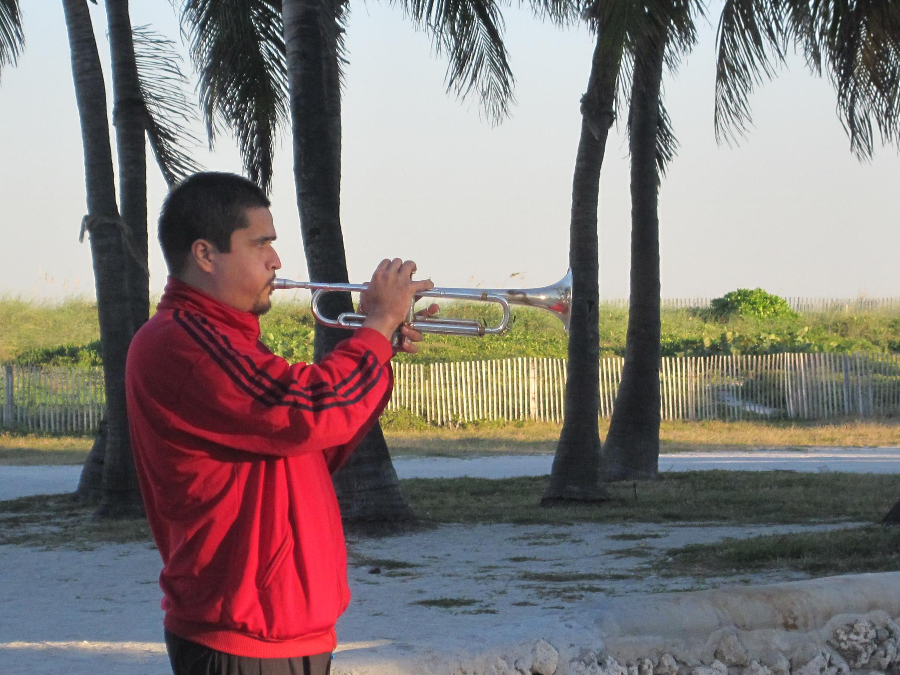
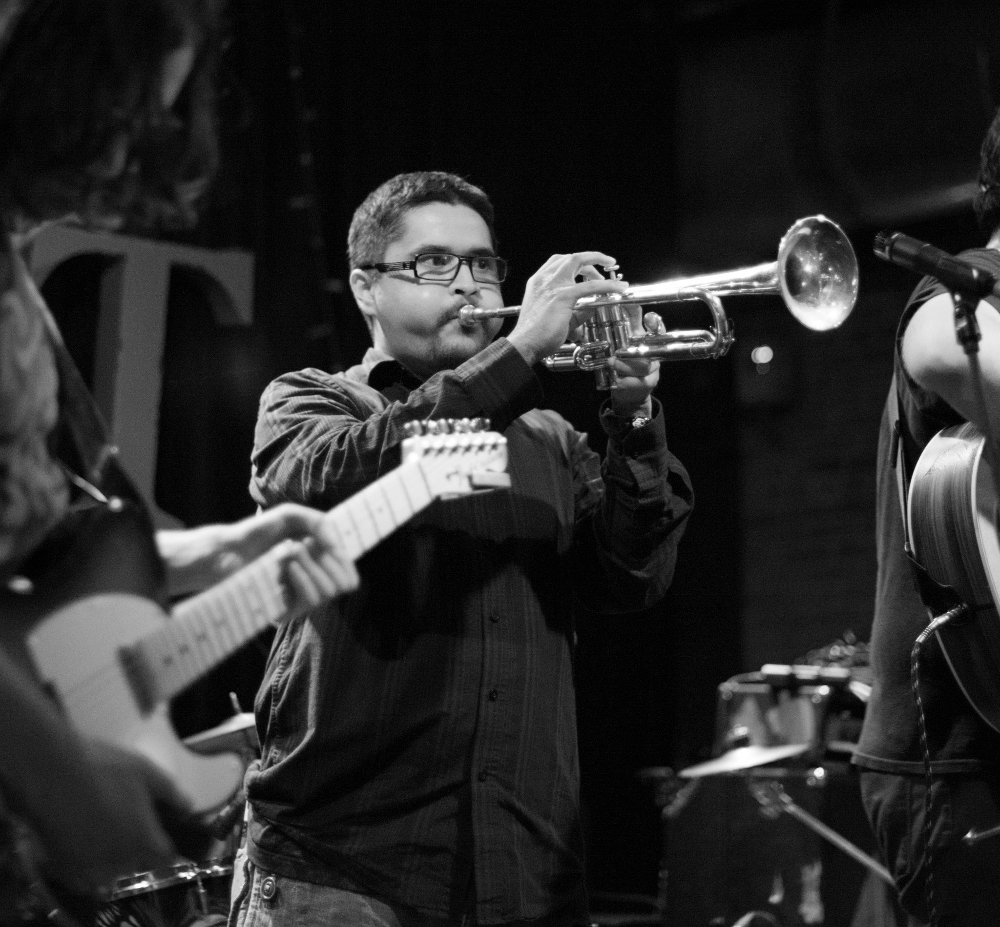

I was born in San Francisco, CA, raised in Seattle, WA, educated in Boston, MA, and now back in the PNW, I have always played a horn starting at the age of 6 on the clarinet and then to trumpet at 9. Since then I always knew music would be a lifelong journey for me, I worked on honing my skills and diligently keept practicing. I would say my mother,mentors, and lots of practice at an early age is what earned me a scholarship to Berklee College of Music. Going to school for music changed my concept of music forever! While in school, I immersed myself into the Boston Music scene and studied with some amazing professors that always challenged me musically.Through the years I has also made an effort to study independently and hounded some of my favorite artists to give me music lessons, I had and have no shame in asking people to teach me something. I believe this attitude led me to performance opportunities with world-reknown artists like Gloria Estefan and the Chieftains.
Before coming to epicodus, I was working at a speech recognition software company called Voicebox Technologies, where I was employed as a software engineer.
Now, I'm on a new Journey at Ep icodus and am thrilled to be imersed in a new world of knowledge and information. Projects that I'm interested in include a software that makes it easier to copywrite music, audio applications for musicians, and apps that could help the homeless crisis in Seattle, WA. My hopes are to continue on this new path of coding that I've embarked on, utilizing my newfound knowledge to impact and influence positive social change in my community, through technology and music.
